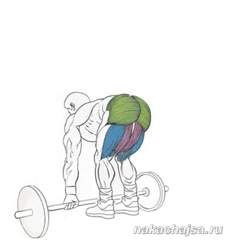

Помощь
Упражнения
Становая тяга:
Становая тяга - это базовое упражнение для спины, оно очень хорошее упражнение, если правильна техника выполнения! Потому что многие люди делая его не правильно, получают травму спины, после чего совсем перестают качать спину, и боятся этого упражнения как "огня". Становую тягу нужно делать потому что после этого упражнения в нашем организме начинает вырабатываться больше тестостерона (мужского полового гормона) который также берет участие в росте мышц. При этом упражнении качаются также мышцы ног (ягодицы). Если ваша цель набор мышечной массы, то это упражнения нужно включить в программу ваших тренировок. Также для увеличения тестостерона и набора веса есть хорошое упражнения приседания со штангой.
Техника выполнения упражнения:
Поставьте штангу на пол, наденьте на нее необходимый вес блинов. Поставьте ноги на ширине плеч, ноги в коленях должны быть чуть согнуты, ступни должны быть под грифом штанги. Нагнитесь (спина должна быть прямой!!!) возьмитесь за штангу руками (расстояние примерно ширина плеч). Глубоко вдохните начинайте подымать штангу до полного выпрямления (ноги в коленях одновременно разгибаете пока вы не будете стоять ровно). Все время держите спину ровно! Травму получают именно тогда когда не держат ровно спину. Затем плавно опустите штангу вниз, также держа спину ровно! и сгибая колена. Попросите тренера чтоб вам показал как правильно выполняется это упражнение, и пусть посмотрит как вы его делаете. Как дышать во время этого упражнения. Выдыхаете при подъеме штанги в конце максимальной нагрузки.